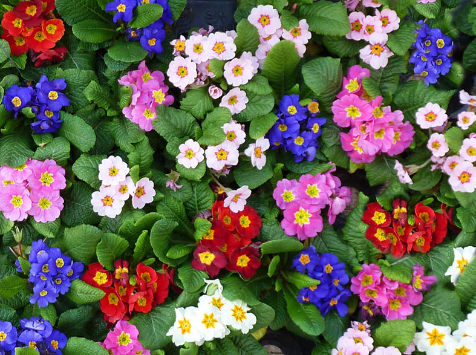
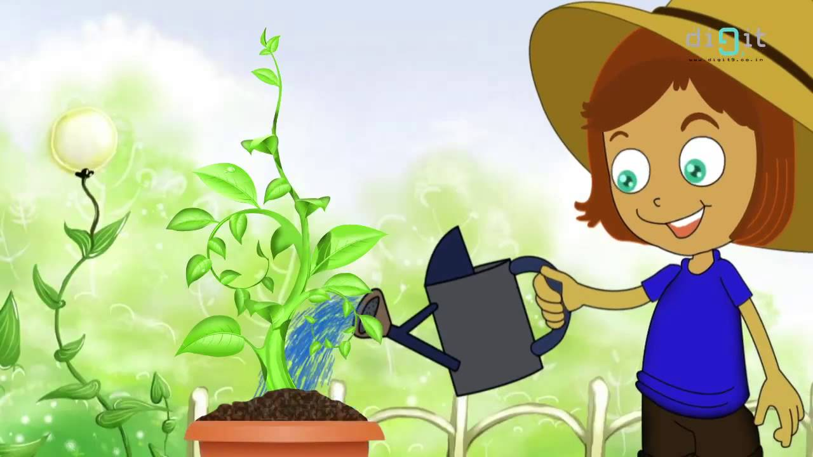

About Flowers

A flower is the reproductive part of a plant that produces seeds. Plants that produce flowers and fruit are called angiosperms. There are more than 300,000 species of angiosperms, and their flowers and fruits vary in differnt color shapes and sizes. This a flower that is purple. Many flowers range in different colors. Look at the photo below and see the differnt shades of flowers. 
Without sunlight and water, plants will die.
With all the hard work it takes to plant a flower and also watching it blossom it would really be heart breaking just to watch its life slowly fade away. This picture below would probably best describe your erternal #Mood.